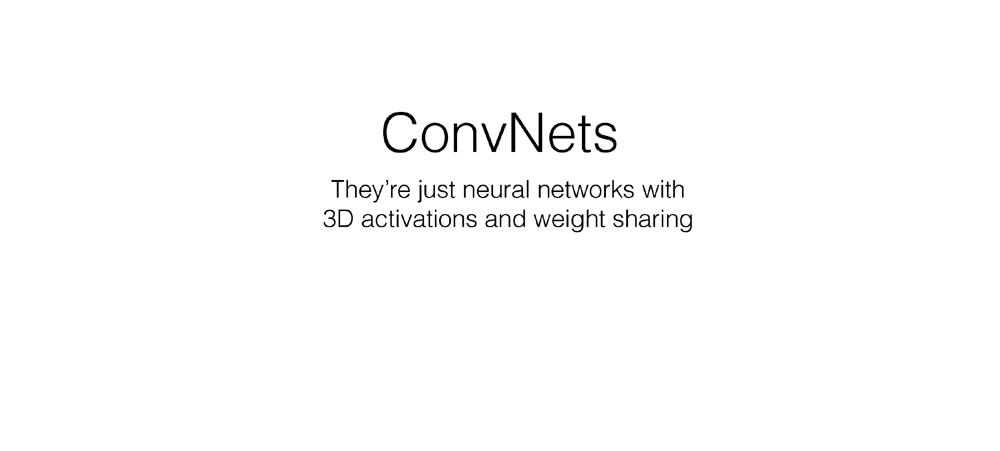
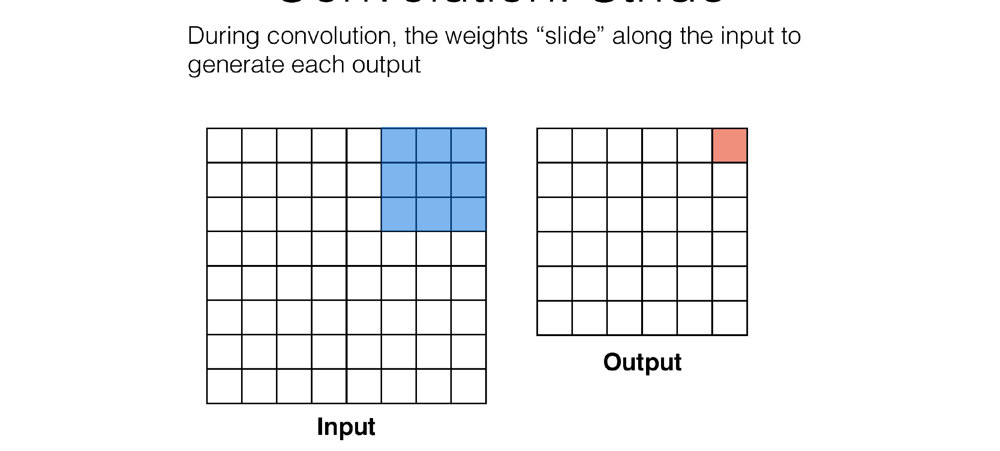
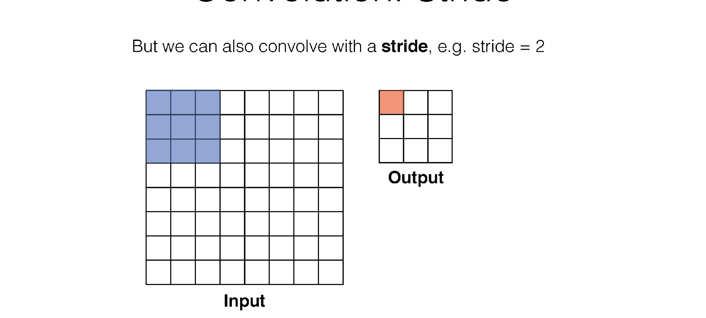
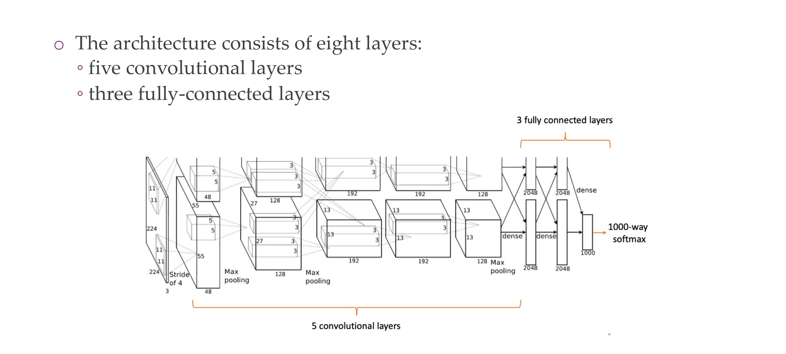
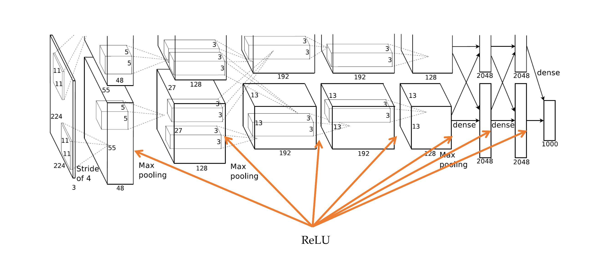
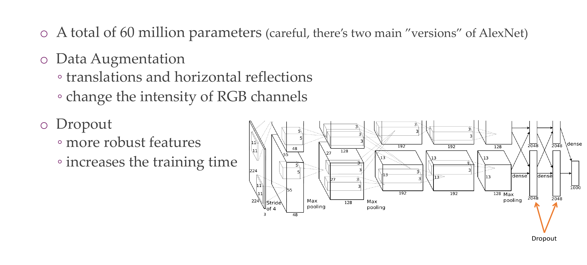
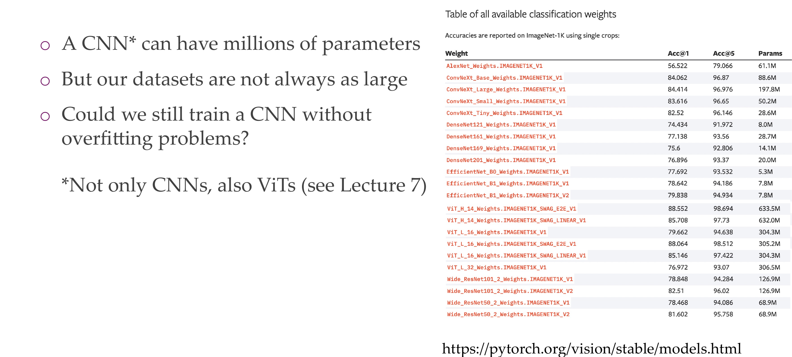

1 Optimizing neural networks
2 Multi-layer perceptrons (Recap)
3 Multi-layer perceptrons (Recap)
Prior knowledge, is something that we know about the data, we want to bring this into the design of the NNs
4 Consider an image
5 Hubel and Wiesel: Nobel Prize for Physiology or Medicine in 1981
Here when we see edges, there is some electricity
6 Filters, yes. How about learnable filters
Canny and GAbor filters they all try to find edges, then it can be used for recognition purposes.
7 Filters, yes. How about learnable filters
8 The convolution operation
9 The convolution operation
Here f*g is the convolution in red line. In the 1D case
Here g is the kernel
10 Convolution for 2D images
Now our kernel is 2D
11 Convolution for 2D images
12 Examples
13 Examples
Sobel fires for vertical edges
14 Quiz
- It will emphasize edges
If you take a CNN and you have weights uniform then you would not have this edge detectors and the NN would not train well
This is like adding prior knowledge because we know edges are supper important to detect whether is a cat or a dog
15 The motivation of convolutions
Local connectivity, for ie if you want to detect edges, you dont need to look at the whole image and because you share the parameters, the weights are tied and you are more efficient.
16 The motivation of convolutions
This saves quite a bit of neurons connected, so less parameters, this is the same as analysing an img of 16x16, but now instead we use filters so that we can detect edges and only with these edges we have now building blocks which are less than computing the whole image.
Here the kernel would be of width 3
17 The motivation of convolutions
So here in the left the NN has a receptive field of size 3, because this is how much a neuron can look up, so it is the kernel size. But per layer the receptive field gradually grows which allow you to have a hierarchical structure
- For instance the neurons at layer 50 now they can see at the whole image and can put image into context. This is how you go from local to global
18 The motivation of convolutions
19 The motivation of convolutions
If the input shift then the outputs does the same, this is not the case for a fully connected NN
20 A simple convolution: saves space!
The bigger the filter the more zeros we will have
21 Convolution vs Pooling in 2D
22 The pooling operations
Pooling functions are another way to incorporate prior knowledge. It aggregates the activations. This can be local or global
You can max pool, or average pool the activations in some rectangular neighborhood. It reduces the space size and improves the efficiency and it also increases robustness
It also incorporates invariance to translations, because it will not matter whether the 6 would be in that corner or so on so on
At the last step you could od average global pooling, and just have one vector out, and in this vector will be trained to represent the whole image. Here you could apply a fully connected layer if you care classification
Min, max all are differentiable. If you instead would have and argmax then it will not be differentiable
So pooling operations like the global ones, also allow you to be independent in which input image you feed into your NN
23 LeNet-5
Here you do not have global pooling so an img of 29x29 would not have worked
The hidden dimensionalities are called channels, and the pooling is applied to all channels. So pooling operations do not change dimensionality but change the spatial extent.
So each layer would have channels those are all the squares in a layer, pooling it is apploed to every channel and per channel it reduces its square matrix to a lower width and lower height
23.1 More
LeNet-5, a convolutional neural network architecture proposed by Yann LeCun and his collaborators in 1998, does not use global average pooling in its original design. LeNet-5 primarily relies on subsampling layers (pooling layers) and fully connected layers.
The typical structure of LeNet-5 consists of alternating convolutional layers with subsampling (pooling) layers, followed by fully connected layers. The pooling layers in LeNet-5 perform down-sampling through operations like max pooling. Global average pooling was not a commonly used technique at the time LeNet-5 was introduced.
Global average pooling became more prominent in later CNN architectures, such as Google’s Inception models and the popular ResNet architectures
23.2 Global Pooling
Global pooling (or global average pooling) is a technique used in convolutional neural networks (CNNs) to reduce the spatial dimensions of a feature map to a single value or a vector. It involves taking the average (or maximum) value across all spatial locations of each feature map, resulting in a global representation.
Here’s an example of global average pooling with Python using NumPy:
import numpy as np
# Assume you have a 3x3 feature map with 2 channels
feature_map = np.array([
[[1, 2, 3], [4, 5, 6], [7, 8, 9]],
[[10, 11, 12], [13, 14, 15], [16, 17, 18]]
])
# Apply global average pooling
global_avg_pooled = np.mean(feature_map, axis=(0, 1))
# Print the original feature map and the result after global average pooling
print("Original Feature Map:")
print(feature_map)
print("\nGlobal Average Pooled Result:")
print(global_avg_pooled)In this example, feature_map is a 3x3 feature map with 2 channels. The np.mean function is used to compute the average along the spatial dimensions (axis 0 and 1). The resulting global_avg_pooled is a vector representing the global average-pooled values for each channel.
The output should look like this:
Original Feature Map:
[[[ 1 2 3]
[ 4 5 6]
[ 7 8 9]]
[[10 11 12]
[13 14 15]
[16 17 18]]]
Global Average Pooled Result:
[8.5 9.5 10.5]In this case, the global average pooling operation has computed the average value for each channel across all spatial locations, resulting in a global representation for each channel. This global representation is often used as a compact and informative input to subsequent layers or for making predictions in the network.
24 AlexNet: similar principles, but some extra engineering.

Weight sharing in convolutional neural networks (CNNs) refers to the practice of using the same set of learnable parameters (weights and biases) for multiple units or neurons in a layer. In other words, the weights are shared across different spatial locations in the input.
The key idea behind weight sharing is to enforce translation invariance in the features learned by the convolutional layers. In an image, certain features (e.g., edges, textures) are meaningful regardless of their specific location. By using shared weights, the network can learn to detect these features at different spatial positions, leading to a more robust and generalizable representation.
Here’s a brief explanation of weight sharing in CNNs:
- Convolutional Operation:
- In a convolutional layer, a set of filters (also known as kernels) is applied to the input image or feature map.
- Each filter is characterized by a set of learnable weights and biases.
- Spatial Weight Sharing:
- Instead of having unique weights for each spatial location in the input, weight sharing involves using the same set of weights across different spatial locations.
- For example, if a filter detects a certain feature (e.g., an edge) at one location, the same filter with the same weights can be used to detect the same feature at a different location.
- Benefits:
- Reduces the number of learnable parameters in the network, making it more computationally efficient.
- Encourages the learning of spatially invariant features, enhancing the network’s ability to recognize patterns across different locations.
- Translation Invariance:
- Weight sharing helps the network achieve translation invariance, meaning that it can recognize features regardless of their position in the input.
24.1 CNN and Weight Sharing
CNN is primarily used for image classification and segmentation, and it works by finding similar patterns throughout the input. These patterns can be found by sliding a filter with shared weights across the input. The shared weights concept allows the network to learn the same pattern, regardless of its position in the input
25 What shape should the
26 3D Activations
Instead of calling it RGB channels, we just call it channels
27 3D Activations

Now the activations contain width and height and also depth.
The depth is govern by the hidden dimensionality of the NN
28 3D Activations
29 3D Activations

Here this is a convolution kernel, with kernel size 5x5
Now our neuron has a kernel size of 5x5 weights and also x3 because it has 3 channels
So each Neuron as a 3D filter
30 3D Activations
30.1 Example: Not-moving Filter
Here we have:
- Input Layer: 3x32x32
- Kernel 5-size: 3x5x5
If we do not slide the filter then we are gonna end up with:
- Pre-output: 3x1x1 (three scalar values per each channel)
Now we do a summation over the three channels and we have thus:
- Output: 1x1x1
30.2 Example: Sliding Filter


Imagine now that we slide this 3D filter along all the input layer, then we end up:
- Pre-ouput: 3x(28)x(28), where we compute (width - kernel_size + 1) = (32-5+1)
Now we sum over all three channel element wise and end up with:
- Output: 1x28x28
31 3D Activations
32 3D Activations
33 3D Activations
If you now slide the filter with as many neurons we will get:
- Ouput: depth x (\(l\)) x (\(l\))
Where \(l\) = width - kernel_size + 1
34 3D Activations
35 3D Activations
36 3D Activations
37 3D Activations
38 3D Activations
39 3D Activations
40 3D Activations
41 Putting it together
42 Putting it together
43 Putting it together
44 Putting it together
45 Putting it together
46 Putting it together
47 Putting it together
48 Putting it together
Here all these coloured layers in the cube are filters which are neurons. All these neurons act only in one hidden layer8
49 Convolution: Stride
50 Convolution: Stride
51 Convolution: Stride
52 Convolution: Stride
53 Convolution: Stride
54 Convolution: Stride

55 Convolution: Stride
In each time sum across channels because if you want to detect something you want to use all the colors, all the incoming channels
So each convolution sums all channels like in RGB, because you dont want a filter that only looks at blue, one that only looks at red ..
56 Convolution: Stride

Here in the next slide we see that stride is the number of squares that are moved, so the kernel filter will i.e stride=3 will slide every two squares
57 Convolution: Stride
58 Convolution: Stride
59 Convolution: Stride
60 Convolution: Padding
61 Convolution: Padding
62 Convolution: Padding
63 Convolution: Padding
64 Convolution:
W_out is what you get in the ouput layer of the slide (so for one filter)
65 1x1 Convolution
It looks at all the values in the depth, so in RGB, or more importantly in deep NNs the different hidden layers and they just mixed those information together
66 1x1 Convolution: a computationally cheap method
Here in the 5x5x32 the convolution will be done over the 192 channels, 32 times (because we have 32 filters as depth), so sliding the filter a lot
In the bottom case we reduce the number of channels so now we reduce computations
67 Quiz:
- In the case of a fully connected layer, it connects everything in the layer. And even the 1x1 convolution it takes the full input dimensionality meaning it takes a look at all 192 channels still. In the 1x1 it reduces the number of connections comparing to fully connected and also it mixes local information
A 1x1 convolutional layer and a fully-connected layer (dense layer) are similar in that they both perform a linear transformation on the input data, but there are key differences between the two.
67.1 1x1 Convolutional Layer:
- Spatial Information:
- A 1x1 convolutional layer operates on spatial information in the input tensor.
- It applies convolutional filters with a size of 1x1, which means it processes information at individual spatial locations.
- Useful for capturing relationships between channels but does not capture spatial patterns.
- Parameter Sharing:
- Utilizes parameter sharing, similar to larger convolutional layers.
- Each element in the output is the result of a weighted sum of its input elements, considering all channels.
- Output Dimensions:
- The output dimensions depend on the number of 1x1 filters used.
67.2 Fully-Connected Layer:
- Flattening:
- A fully-connected layer operates on the flattened version of the input.
- It considers all elements in the input tensor as individual input features.
- Parameter Sharing:
- Each neuron in a fully-connected layer has its set of weights for every input feature.
- No parameter sharing between different neurons.
- Output Dimensions:
- The output dimensions are determined by the number of neurons in the layer.
67.3 Differences:
- Spatial vs. Global Information:
- 1x1 convolutional layers capture spatial information within each channel.
- Fully-connected layers operate on global information, considering all elements as individual features.
- Parameter Sharing:
- 1x1 convolutions use parameter sharing, making them more efficient for processing spatially correlated features.
- Fully-connected layers lack parameter sharing, resulting in a larger number of parameters.
- Computational Efficiency:
- 1x1 convolutions are computationally more efficient than fully-connected layers, especially in scenarios with spatially structured data.
- Usage in Convolutional Networks:
- 1x1 convolutions are commonly used in convolutional neural networks (CNNs) to adjust the number of channels and perform feature transformations.
- Fully-connected layers are typically used in the final layers of a neural network for classification.
- You dont loss necessarily information, we do not want to do it at the beginning because mixing, red, blue and green per pixel does not do much. It makes sense to do it later if you have edges on top of edges and then you mix this information, it makes more sense.
- It is also not good to apply 1x1 when you do not want translation invariance
- every 1x1 is strictly local, every neuron as a receptive field so there is actually spatial information there
68 Dilated Convolutions
This is very usefull if you need to deal with a huge image, but dont want huge hidden activations
If you do this then you can quickly downscale the image, without ignoring too many things
Also think that dilation its less expensive because doing 5x5 its more expensive than doing 3x3, so you can learn 3x3 but with holes in between and that is more efficient to consider large spatial footprint
69 Pooling
70 Pooling
71 Max Pooling
72 Getting rid of pooling
Instead of using pooling you can use a larger stride (so how many squares we slide) that we talk about
In Transformers pooling it is also not used anymore
In CNN is used
73 Example ConvNet
Every filter is one row here
74 Quiz
If you choose the kernel size to be the same as the input image then it is fully connected.
Mathematically 1
Implementation wise 2
75 How research gets done part 4
76 AlexNet

77 AlexNet
78 Activation function
Faster to train because of simple Relu, and also the gradients are not vanishing because you have the gradient of 1 starting from the positive direction
Why does gradient do not vanish with Relu?
The vanishing gradient problem refers to the issue where the gradients of the loss function with respect to the weights become extremely small during backpropagation, making it challenging for the model to learn and update its parameters effectively. This problem is particularly associated with activation functions that squash their input into a small range, such as the sigmoid or hyperbolic tangent (tanh) functions.
ReLU (Rectified Linear Unit), on the other hand, has a non-saturating activation behavior, which means that it does not squash its input into a small range.
ReLU does not saturate in the positive region of its input. For positive input values, the gradient remains constant (1), leading to consistent and non-vanishing gradients during backpropagation.
79 Activation function

80 Training with multiple GPUs
81 Training with multiple GPUs

82 On that note: Communicating between GPUs: PyTorch
83 Local Response Normalization
84 Overlapping Pooling
85 Overlapping Pooling
86 Overall architecture
The max pooling make a vector per every image
87 The Overfitting Problem

If a have a cnn that has many parameter more than my data input will i overfit?
If your CNN has a large number of parameters (i.e., it’s a complex model) and you have a small dataset, there is an increased risk of overfitting. A complex model may have the capacity to memorize the training data, capturing noise and outliers instead of learning generalizable patterns.
Althoug all these increase training time but high performance
88 The learned filters
89 Removing layer 7
90 Removing layer 6, 7
91 Removing layer 3, 4
We dont save that much parameters because convolutional layers are more efficient (they are not fully connected, not too many parameters)
92 Removing layer 3, 4, 6, 7
93 Translation invariance
Despite saying that CNN tend to be equivariant which means if you shift the input the output should also shift you can see that if you do that with these images, where you are just shifting the images the outputs do vary quite a lot
So CNN do not learn something that is explicit symmetrical or explicitly equivariant. Equivariance may be a good prior that we put in, but that does not mean that that really happens
94 Scale invariance
Same with scale, we have said that we apply the pooling operations so therefore we can be a bit invariant to scaling, but still NNs tend not to be super scale invariant
95 Rotation invariance
96 Further reading
97 Transfer learning: carry benefits from large dataset to the small one!
98 UPDATE: Transfer learning
99 Why use Transfer Learning?

The answer is yes even if you have saved the weights from a extremely good model and you have a small dataset
100 Convnets are good in transfer learning
Fine Tune the whole NN
Or use the CNN as feature extractor
101 Solution I: Fine-tune hT using hS as initialization
102 Initializing hT with hS
Imagnet, it outputs 1000 categories. If you want to classification for 30 categories then you need to throw that one away and restart training a new classifier to your needs
AlexNet, you can start removing some layers depending on how much data you have
103 Initializing hT with hS
if you pertained your NN in ImgNet and now you want to do Satalite classification then it may be usefull to find tune even those layers the bottom ones